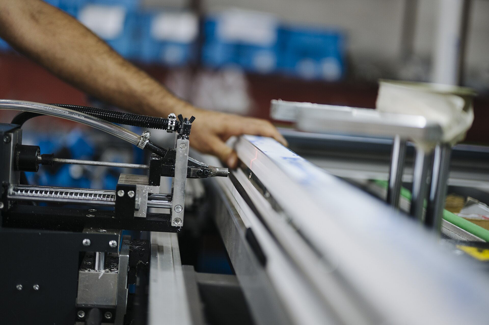
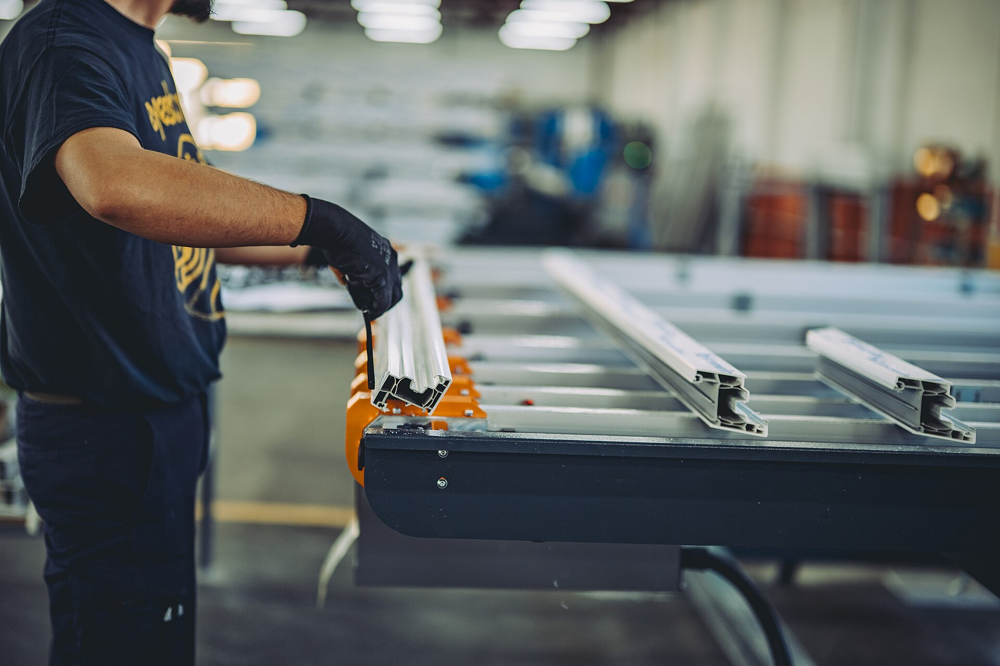
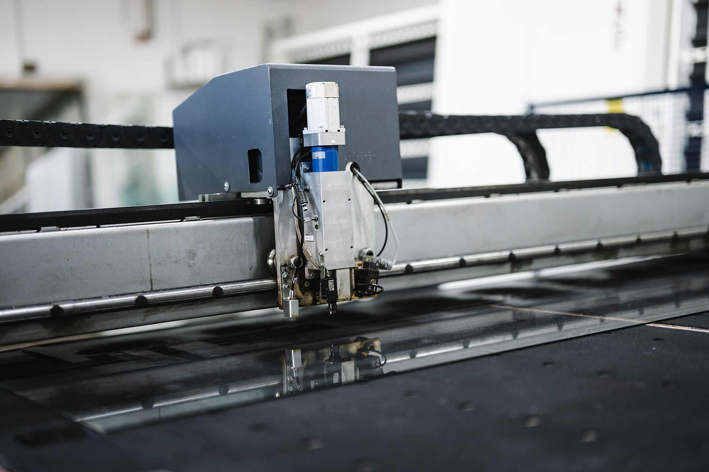
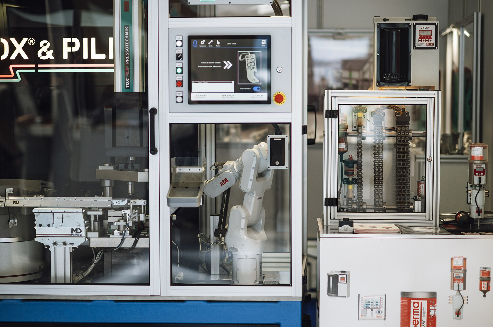
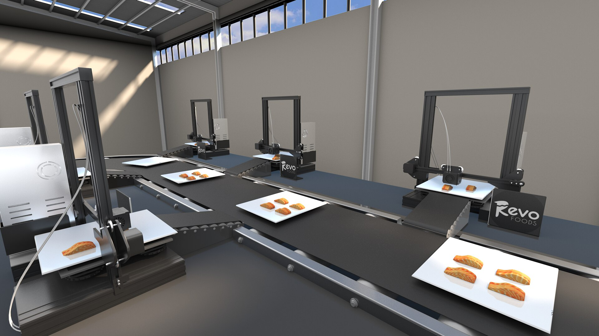

CAM-01
上料工位
正常
2 / 6
第 2 步 · 扫码上料
作业正确

CAM-02
装配工位 A
待确认
这一处没看清
4 / 7
第 4 步 · 安装垫片
看不清是否装到位

CAM-03
锁付工位
异常
3 / 5
第 3 步 · 拧紧螺栓
未完成就离开了工位

CAM-04
视觉检测
正常
1 / 3
第 1 步 · 外观检查
作业正确
CAM-05
包装贴标
离线
没有画面信号
12:30 起中断 · 已 12 分钟
— / 4
断线前 · 第 3 步 贴标核对
这个机位现在看不到

CAM-06
下线复核
正常
5 / 6
第 5 步 · 标签核对
作业正确